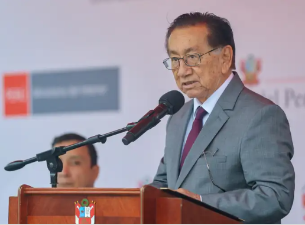
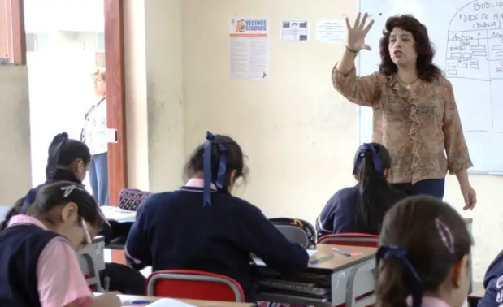

El 34% de peruanos piensa que José Balcázar será censurado antes de julio.

Gobierno aprueba transferencia de S/25 millones para pago de bono extraordinario a docentes
Papa León XIV pide alto al fuego en Medio Oriente y denuncia “la horrible violencia de la guerra”